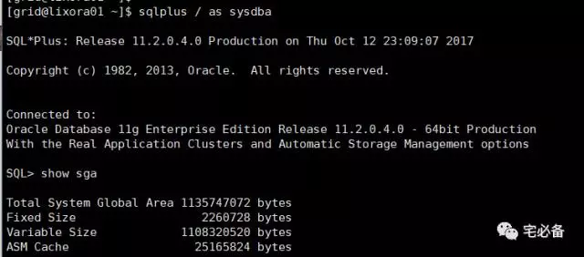
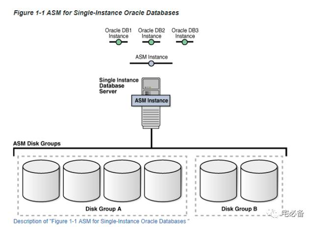
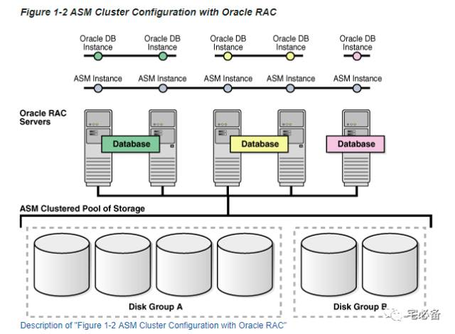
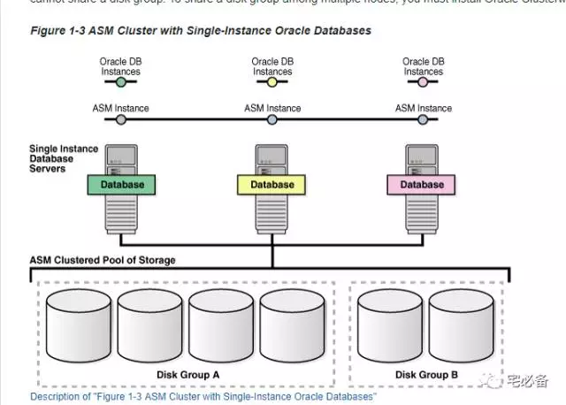

Oracle ASM Instances
原创 2017-10-13 Oracle 宅必备
这个专题讲ASM相关的内容
内容主要来自官方文档，加上一些自己的理解及实践
ASM实例(ASM Instances)
ASM 实例跟Oracle数据库实例类似，有自己的SGA和后台进程
ASM 挂载(mount)磁盘组(disk group)以使数据文件可以被数据库使用
该实例由于执行的任务远少于数据库实例，所以其大小很小

ASM 元数据(metadata)
ASM 元数据是ASM 用来控制磁盘组以及存储磁盘组信息的，它包含如下信息:
-
包含在磁盘组的磁盘信息
-
磁盘组可用的空间大小
-
磁盘组中文件的文件名
-
磁盘组数据文件data extent的位置
-
一个redo log用来保存更改的数据块信息
ASM和数据库需要共享访问磁盘组里面的磁盘
ASM实例可以通过Oracle cluster 软件搭建集群，每个节点一个ASM实例
如果有多个数据库实例在一个节点，那么所有数据库实例共享这个ASM实例
集群中一个节点的ASM实例失败，其上面的数据库实例也会失败
ASM实例和Oracle实例的关系
1.单实例数据库—-单实例ASM

这种情况下多个数据库实例使用一个ASM实例，磁盘组A和磁盘组B由一个ASM实例管理
2.集群数据库—-集群ASM

这种情况下多个Oracle RAC集群使用一个ASM集群，磁盘组A和磁盘组B由一个ASM集群管理
3.单实例数据库—-集群ASM

这种情况下多个Orale 单实例使用一个ASM集群，磁盘组A和磁盘组B由一个ASM集群管理